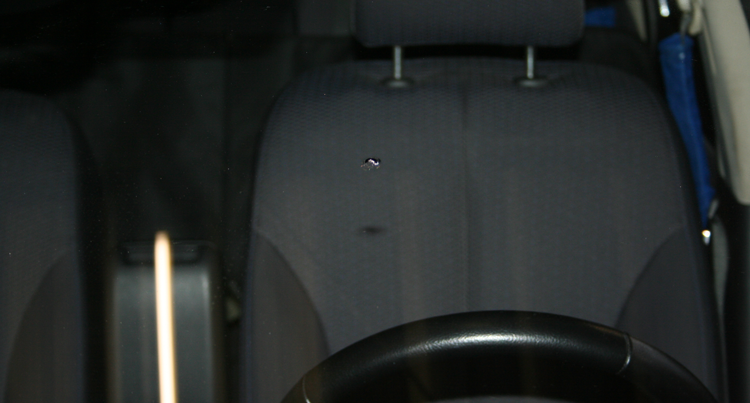

Kostenlose Steinschlagreparatur in 30 Minuten

Ein Steinschlag ist schnell passiert.
Und auch schnell wieder behoben!
30 Minuten Service zum Nulltarif bei Teilkaskoversicherung
Ein Steinschlag ist schnell passiert.
Und auch schnell wieder behoben!
30 Minuten Service zum Nulltarif bei Teilkaskoversicherung
Viele Glasschäden sind zu groß oder an Stellen, an denen eine Reparatur laut Kraftfahrtbundesamt nicht erlaubt ist. Hierbei muss die Scheibe ausgetauscht werden.
automotify autoglas bietet Ihnen den Neueinbau von Windschutzscheiben, Seitenscheiben und Heckscheiben mit Material in Erstausrüster-Qualität und natürlich mit fachgerechten perfekten Service.
Im Schadenfall beraten wir Sie kompetent und übernehmen die komplette Abwicklung mit Ihrer Versicherung. Von der Schadenmeldung bis hin zur Rechnungsstellung; die Förmlichkeiten übernehmen wir gern für Sie.
Matte, zerkratzte, vergilbte, verschlissene Scheinwerfer? Wenig Licht? Geblendeter Gegenverkehr? Mängelschein vom TÜV?
Ein Austausch dieser Scheinwerfer ist meistens sehr teuer und zeitaufwändig.
Eine Restauration der betroffenen Scheinwerfer ist deutlich günstiger und ist in etwa 1 bis 2 Stunden erledigt.
Nach der Reparatur sind die Scheinwerfer wieder voll funktionsfähig und bieten eine höhere Lichtausbeute.